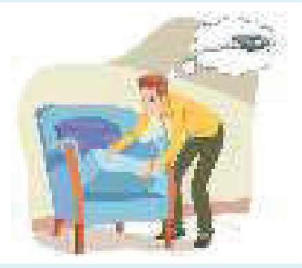
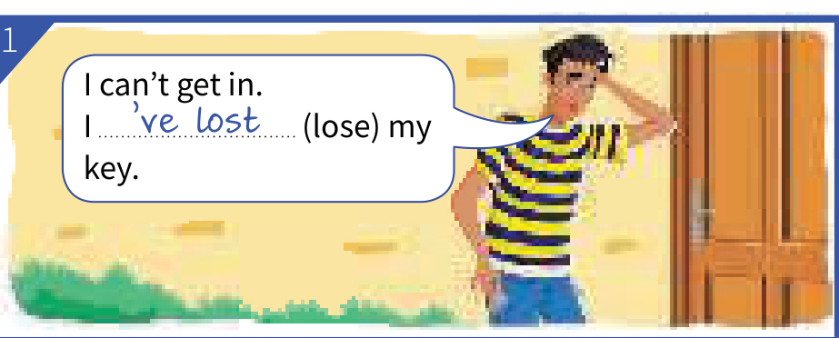
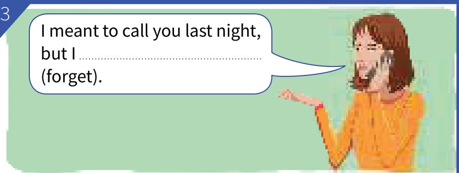
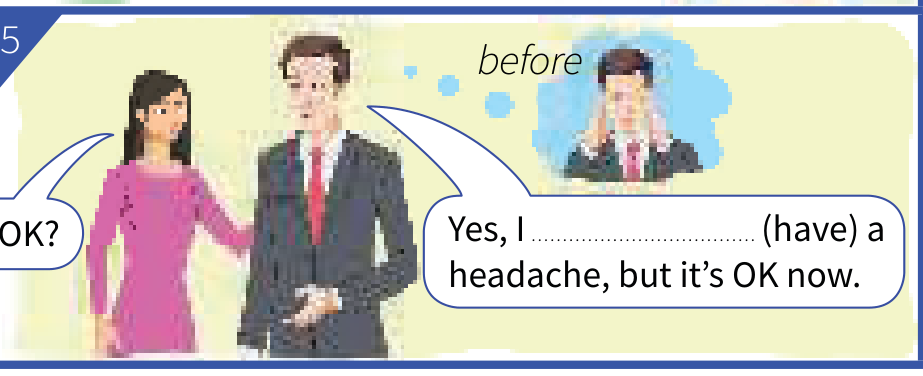
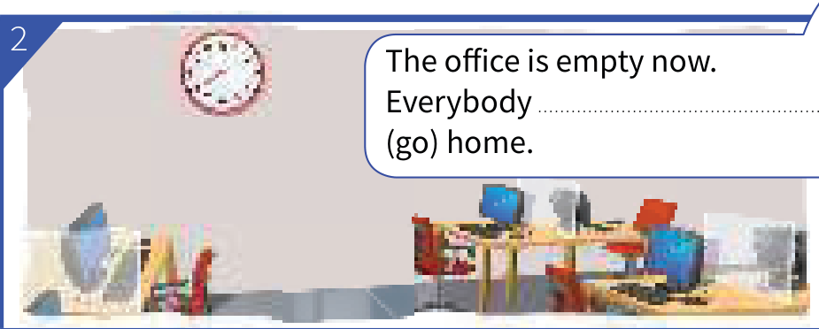
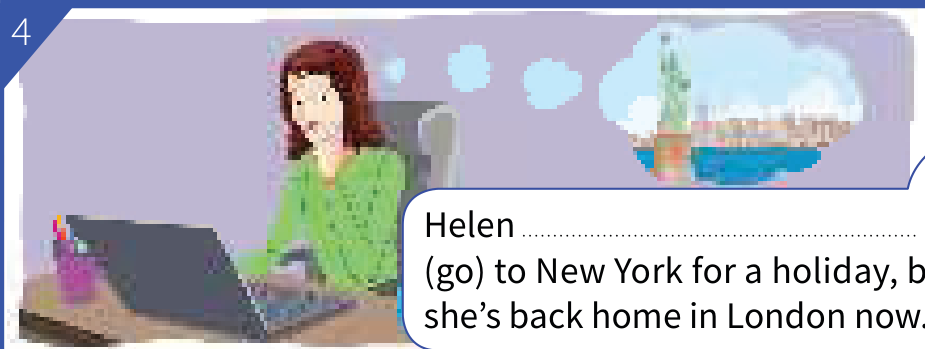
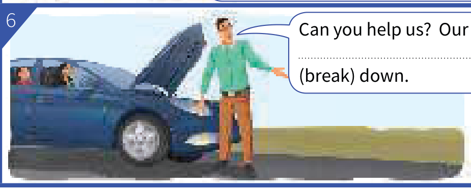

Learning Objectives
- Understand that the present perfect is a present tense: it tells us about the situation now
- See that the past simple tells us only about the past
- Compare pairs like They've gone away and They went away
- Use the present perfect for new or recent happenings
- Use the past simple for things that are not recent or new
- Give new information with the present perfect, then continue with the past simple
Part A — Theory
Study this example situation

Tom is looking for his key. He can't find it.
He has lost his key. (present perfect)
This means that he doesn't have his key now.
Ten minutes later:
Now Tom has found his key. He has it now.
Has he lost his key? No, he has found it.
Did he lose his key? Yes, he did.
He lost his key (past simple)
but now he has found it. (present perfect)
The present perfect is a present tense
The present perfect (something has happened) is a present tense. It tells us about the situation now.
The past simple (something happened) tells us only about the past. If somebody says 'Tom lost his key', we don't know whether he has the key now or not. We know only that he lost it at some time in the past.
Compare present perfect and past simple
They've gone away. They'll be back on Friday. (they are away now)
They went away, but I think they're back at home now. (not They've gone away)
It has stopped raining now, so we don't need the umbrella. (it isn't raining now)
It stopped raining for a while, but now it's raining again. (not It has stopped)
New or recent happenings
You can use the present perfect for new or recent happenings:
I've repaired the washing machine. It's working OK now.
'Hannah has had a baby! It's a boy.'
'That's great news.'
Usually, you can also use the past simple:
I repaired the washing machine. It's working OK now.
Not recent or new — use the past simple
Use the past simple (not the present perfect) for things that are not recent or new:
Mozart was a composer. He wrote more than 600 pieces of music. (not has been … has written)
My mother grew up in Italy. (not has grown)
Compare:
| Present perfect | Past simple |
|---|---|
Somebody has invented a new type of washing machine. | Who invented the telephone? (not has invented) |
New information, then the past simple
We use the present perfect to give new information (see Unit 7). But if we continue to talk about it, we normally use the past simple:
a: Ow! I've burnt myself.
b: How did you do that? (not have you done)
a: I picked up a hot dish. (not have picked)
a: Look! Somebody has spilt something on the sofa.
b: Well, it wasn't me. I didn't do it. (not hasn't been … haven't done)
Past simple ➜ Unit 5
Present perfect ➜ Units 7–8
Present perfect and past 2 ➜ Unit 14
American English ➜ Appendix 7
Part B — Exercises
Complete the sentences. Use the present perfect where possible. Otherwise use the past simple.

I can't get in. I (lose) my key.

I meant to call you last night, but I (forget).

Are you OK? Yes, I (have) a headache, but it's OK now.

The office is empty now. Everybody (go) home.

Can you help us? Our car (break) down.

Helen (go) to New York for a holiday, but she's back home in London now.
Are the underlined parts of these sentences OK? Correct them where necessary.
If the underlined part is already correct, type OK. Contractions and full forms are both accepted.
- Did you hear about Sophie? She's her job.
- My mother in Italy.
- How many plays ?
- I've his name. Is it Joe or Jack?
- paper?
- Drugs a big problem everywhere.
- We the car, but now it's dirty again.
- Where ?
- Ellie shopping. She'll be back in about an hour.
- Albert Einstein the theory of relativity.
Put the verb into the correct form, present perfect or past simple.
Contractions like It's and full forms like It has are both accepted.
- It raining for a while, but now it's raining again. (it / stop)
- The town where I live is very different now. It a lot. (it / change)
- I studied German at school, but I most of it now.
- The police three people, but later they let them go.
- What do you think of my English? Do you think ?
- Are you ready to go? your coffee?
- I for a job as a tour guide, but I wasn't successful.
- Where's my bike? It outside the house, but it's not there now.
- Quick! We need to call an ambulance. There an accident.
- a: I've found my phone.
b: Oh, good. Where it?
a: It at the bottom of my bag. - a: Ben won't be able to play tennis for a while. He his arm.
b: Oh. How ?
a: He off a ladder.
Answer Key
Exercise 13.1 — Complete the sentences
- I can't get in. I 've lost / have lost my key.
- I meant to call you last night, but I forgot.
- Are you OK? Yes, I had a headache, but it's OK now.
- The office is empty now. Everybody has gone home.
- Can you help us? Our car has broken down.
- Helen went to New York for a holiday, but she's back home in London now.
Exercise 13.2 — Correct them where necessary
- Did you hear about Sophie? She's given up her job. OK
- My mother grew up in Italy.
- How many plays did William Shakespeare write?
- I've forgotten his name. Is it Joe or Jack? OK
- Who invented paper?
- Drugs have become a big problem everywhere. OK
- We washed the car, but now it's dirty again.
- Where were you born?
- Ellie has gone shopping. She'll be back in about an hour. OK
- Albert Einstein was the scientist who developed the theory of relativity.
Exercise 13.3 — Present perfect or past simple
- It stopped raining for a while, but now it's raining again.
- The town where I live is very different now. It has changed a lot.
- I studied German at school, but I 've forgotten / have forgotten most of it now.
- The police arrested three people, but later they let them go.
- What do you think of my English? Do you think it's improved / it has improved?
- Are you ready to go? Have you finished your coffee?
- I applied for a job as a tour guide, but I wasn't successful.
- Where's my bike? It was outside the house, but it's not there now.
- Quick! We need to call an ambulance. There's been / There has been an accident.
- a: I've found my phone. b: Oh, good. Where did you find it? a: It was at the bottom of my bag.
- a: Ben won't be able to play tennis for a while. He's broken / He has broken his arm. or He broke his arm. b: Oh. How did that happen? a: He fell off a ladder.
Summary
| Use | Example |
|---|---|
| The present perfect is a present tense: it tells us about the situation now | He has lost his key. = he doesn't have his key now. |
| The past simple tells us only about the past | Tom lost his key. |
| Something that is still true now | They've gone away. They'll be back on Friday. |
| Something that was true then but not now | They went away, but I think they're back at home now. |
| New or recent happenings | I've repaired the washing machine. It's working OK now. |
| Things that are not recent or new | Mozart was a composer. He wrote more than 600 pieces of music. |
| New information, then the past simple when we continue | Ow! I've burnt myself. How did you do that? |